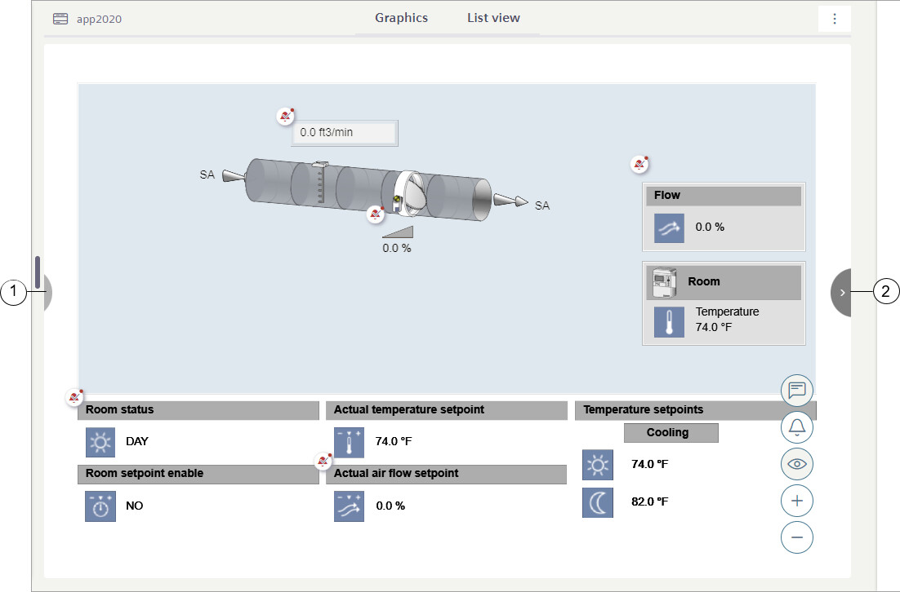

Selection and Navigation
This section provides information about how selection and navigation work in the Graphics.
Select a topic to continue:
Primary and Secondary Selections
When you select a graphic or an object associated with a graphic in System Browser, the Graphics tab displays the representative graphic or graphic template in the Primary pane and the Property Viewer tab displays the associated object properties.
The object properties displayed in the Property Viewer change according to your selection, as follows:
- Primary selection – Double-clicking a symbol in a graphic changes the selection in the System Browser to the top Related Item of the selected object, which can change what is displayed in the Primary pane. The properties displayed in the Property Viewer are replaced with the object properties that correspond to the current selection.
- Secondary Selection – Single-clicking an object in a graphic replaces the properties displayed in the Property Viewer with the object properties that correspond to the current selection.
Downward Navigation
If enabled, downward navigation overrides the default navigation logic in System Browser. When you double-click on an element on a graphic, the primary selection in System Browser changes to the referenced object’s first child object node that has a graphic associated with it.
If the referenced object does not exist in the current System Browser view and the first child object node does not have a related graphic item, the primary selection does not change and there is no navigation.
Downward navigation does not occur when the object’s related item is a graphic link, a viewport, or an object model listed in ExcludeFromDownwardNavigation. In these cases that do not use downward navigation, the system reverts to the default navigation logic.
Default Profile
When a user’s profile is set to the Default.HLDL.JSON profile, the downward navigation is disabled by default.
Enabling Downward Navigation
To enable downward navigation, the user’s profile must be configured for it.
User Profile Path: GMSProjects\WebSites\[Website Name]\[Flex Name]\profiles\[User’s Profile]
Property: EnableDownwardNavigation
- If True – Downward navigation is enabled.
- If False – Downward navigation is disabled.
NOTE: If the property is missing or removed from the user’s profile, contact your local IT to add the property to their profile.
Property: ExcludeFromDownwardNavigation
- Add the object model name inside the "[]" tag, separated by a comma.
Example: "ExcludeFromDownwardNavigation": ["GMS_Aggregator", "GMS_Servers_Folder"]
Related Items Navigation

- Previous button.
- Next button.
Default Selection Logic (Upward Navigation)
The selection logic allows you to navigate through a selected node’s related items and all the graphical items, if any, of its ancestors ("upward navigation"). Ancestors follow a child-parent-grandparent model, so when you select an object, you are working your way up the hierarchical tree of the System Browser. The selection logic searches all views where the selected node resides in and has a different ancestor. If the object and its ancestors have any related graphic items, the graphic displays in the Primary pane, and you can navigate via the next and previous button on the toolbar. If you do not want this behavior, and want to show only the graphics of the selected node, change the Exclude Ancestor Graphics setting in Account.
When you select a subpoint in System Browser, the graphic template of the parent object displays. The Graphics Viewer selects (adorns) the subpoint’s associated symbol on the graphic template, if it exists.